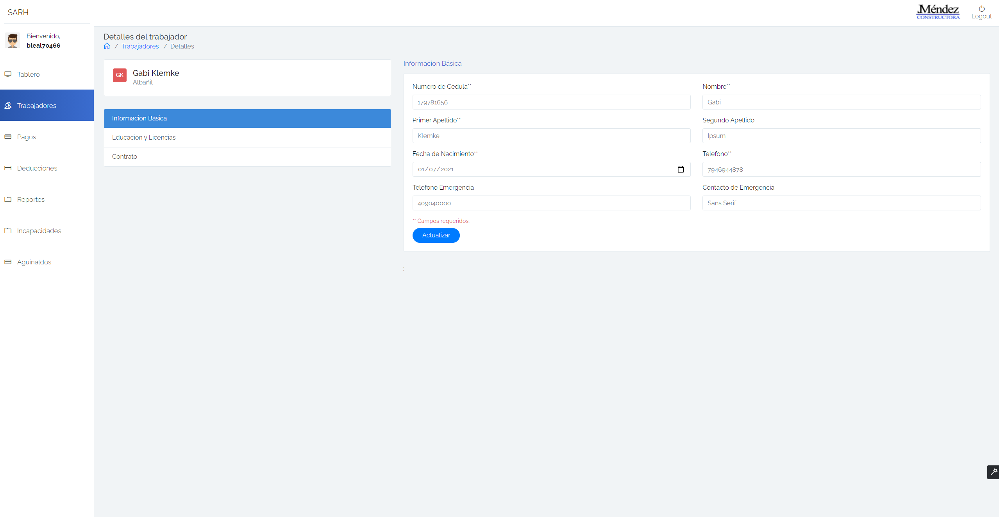
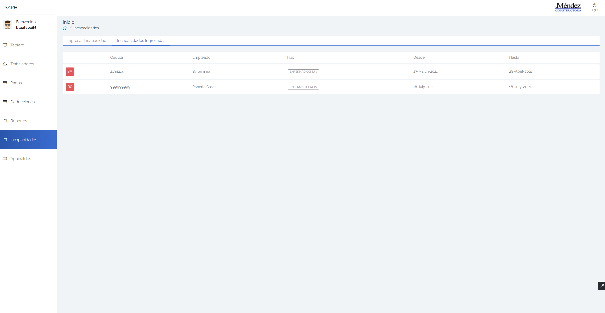
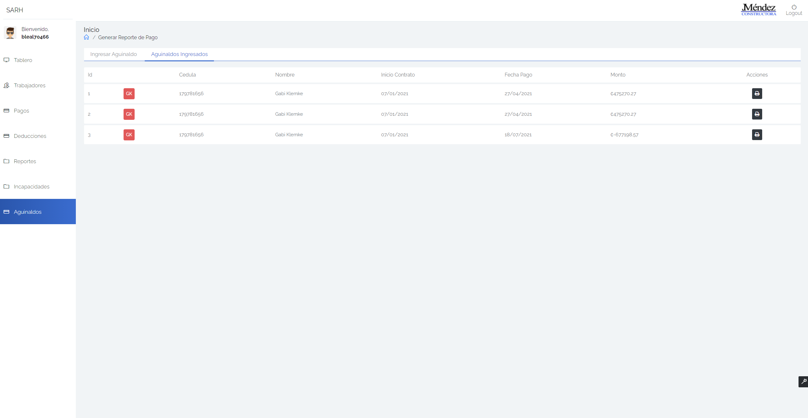

Manual de Usuario Sistema de Administración de Recursos Humanos (SARH)
GeneralidadesInicio de sesiónCerrar sesiónMenú de personalizaciónUsuario AdministradorTableroUsuariosAñadir usuarioUsuariosEdición de usuarioBitácorasBitácora de empleadosBitácora de pagosUsuario Recursos HumanosTableroTrabajadoresAñadir trabajadorTrabajadores activosEdición de información básicaEdición de educación y licenciasEdición de contratoTrabajadores InactivosPagosGenerar boleta de pagoPagos ingresadosImpresión de boleta de pagoDeduccionesEdición de deducciónReportesReporte de vacacionesCrear reporte de vacacionesReporte de evaluacionesCrear reporte de evaluacionesReporte de ausencias injustificadasCrear reporte de ausencias injustificadas.IncapacidadesIngresar incapacidadIncapacidades ingresadasAguinaldosIngresar aguinaldoAguinaldos ingresadosImpresión de reporte de aguinaldo
Generalidades
Inicio de sesión

En la pantalla de inicio de sesión deberás ingresar tu usuario y contraseña para posteriormente iniciar sesión dentro del sistema en el tipo de usuario asignado.
Cerrar sesión
Para cerrar la sesión deberás dar click en el botón "Cerrar Sesión" en la barra superior de la pantalla.
Menú de personalización
Al dar click en el botón en la parte inferior derecha o izquierda de la pantalla aparecerá el menú correspondiente a la personalización, desde donde puedes cambiar la fuente, el modo oscuro o cambiar el menú de módulos de izquierda a derecha o viceversa.
Usuario Administrador
Tablero
En esta sección se puede encontrar el fácil acceso a los demás módulos del sistema correspondientes al usuario administrador, así como ver la bitácora de movimientos recientes.
Usuarios
Dentro del módulo de usuarios podrás seleccionar 2 principales secciones las cuales son las siguientes:
Añadir usuario
En esta sección podrás añadir un usuario nuevo al sistema con su respectivo nombre de usuario, contraseña y rol correspondiente.
Usuarios
Desde esta sección podrás ver los usuarios existentes dentro del sistema con su respectivo rol y en la columna de acciones podrás dar click en el botón para editar el usuario o el botón para eliminarlo.
Edición de usuario
Cuando desees editar un usuario podrás hacerlo cambiando su contraseña únicamente.
Bitácoras
Dentro del módulo de bitácoras podrás seleccionar 2 secciones las cuales son las siguientes:
Bitácora de empleados
Desde aquí podrás ver la bitácora de movimientos recientes en el sistema correspondientes a empleados. Podrás dar click en las cabeceras de las columnas para ordenar los datos por dicha columna ya sea de forma ascendente o descendente.
Adicionalmente seleccionar cuantos registros mostrar por página:
También pudes filtrar los resultados por búsqueda:

Y podras cambiar de página dando click en los botones de navegación de la parte inferior derecha.
Bitácora de pagos
Desde aquí podrás ver la bitácora de movimientos recientes en el sistema correspondientes a pagos. Podrás dar click en las cabeceras de las columnas para ordenar los datos por dicha columna ya sea de forma ascendente o descendente.
Adicionalmente seleccionar cuantos registros mostrar por página:
También pudes filtrar los resultados por búsqueda:
Y podrás cambiar de página dando click en los botones de navegación de la parte inferior derecha.
Usuario Recursos Humanos
Tablero
En esta sección se puede encontrar el fácil acceso a los demás módulos del sistema correspondientes al usuario de recursos humanos.
Trabajadores
En esta sección podemos encontrar 3 pestañas en la parte superior, en cada una de ellas puedes añadir un trabajador nuevo al sistema, visualizar y editar los trabajadores activos o bien, visualizar los trabajadores que se encuentran inactivos.
Añadir trabajador
En esta sección se ingresan los nuevos trabajadores al sistema, los campos señalados con (**) son de carácter obligatorio. Una vez que se han ingresado todos los datos requeridos y los opcionales si así se desee, se procede a dar click en el botón azul con texto "Añadir" y el nuevo trabajador será ingresado al sistema.
Trabajadores activos
Desde aquí se pueden ver los trabajadores actualmente activos en la empresa, de igual modo, puedes dar en el ícono en la columna de acciones que nos permite editar el trabajador, el formulario de edición posee 3 secciones y se ve de la siguiente manera:
Edición de información básica

Aquí puedes editar la información básica, tal como número de cédula, teléfono, etc.
Edición de educación y licencias
Aquí puedes editar la información del grado de educación o los tipos de licencias que posee el trabajador.
Edición de contrato
Aquí puedes editar la información del contrato como el puesto o el cargo específico.
Trabajadores Inactivos
En esta sección se pueden visualizar los trabajadores que actualmente no están trabajando en la empresa (tienen el contrato finalizado) pero que en el pasado lo hicieron.
Pagos
En este módulo puedes encontrar 2 secciones en las que se divide las cuales son las siguientes.
Generar boleta de pago
Aquí encontrarás el formulario para generar las boletas de pago correspondientes por empleado. Deberás seleccionar un empleado y un periodo de pago y los cálculos correspondientes se harán automáticamente, adicionalmente puedes agregar algún tipo de observación correspondiente a dicho pago para posteriormente dar click en el botón azul "Añadir".
Pagos ingresados
Aquí podrás ver todos los pagos ingresados, del mismo modo que dar click en el botón en la columna de acciones para imprimir la boleta de pago.
Impresión de boleta de pago
Cuando quieras imprimir una boleta de pago podrás seleccionar el tamaño de la hoja y posteriormente dar click en el botón azul "Imprimir".
Te aparecerá un formulario muy similar a este en donde lo podrás guardar como PDF o enviarlo a una impresora conectada o por medio de Wifi.
Deducciones
En este modulo pudes ver las deducciones correspondientes a los pagos de los trabajadores, del mismo modo en que puedes dar click en el botón para editar los porcentajes de las mismas.
Edición de deducción
Cuando quieras editar una deducción, podrás cambiar los porcentajes del patrono o del trabajador para posteriormente dar click en el botón azul "Guardar" o bien si no quieres hacer ningún cambio puedes dar click en el botón con borde azul "Volver a la lista".
Reportes
En el módulo de reportes puedes ingresar a 3 secciones de reportes diferentes las cuales son las siguientes:
Reporte de vacaciones
Aqui puedes ver los reportes de vacaciones existentes, así como agregar uno nuevo dando click en el botón azul superior.
Crear reporte de vacaciones
Cuando quieras crear un nuevo reporte de vacaciones deberás seleccionar el trabajador, la fecha de inicio y fin y marcar si fueron aprobadas y opcionalmente alguna observación conforme a dicho reporte de vacaciones.
Reporte de evaluaciones
Aqui puedes ver los reportes de evaluaciones existentes, así como agregar uno nuevo dando click en el botón azul superior.
Crear reporte de evaluaciones
Cuando quieras crear un nuevo reporte de vacaciones deberás seleccionar el trabajador, la calificación y opcionalmente alguna observación adicional.
Reporte de ausencias injustificadas
Aqui puedes ver los reportes de ausencias injustificadas existentes, así como agregar uno nuevo dando click en el botón azul superior.
Crear reporte de ausencias injustificadas.
Cuando quieras crear un nuevo reporte de ausencias injustificadas deberás seleccionar el trabajador,la fecha de inicio y fin y opcionalmente alguna nota adicional.
Incapacidades
En el módulo de incapacidades puedes seleccionar 2 secciones diferentes las cuales son las siguientes:
Ingresar incapacidad
Desde aquí pudes ingresar la incapacidad correspondiente seleccionando el empleado, el tipo de incapacidad, el intervalo y cualquier tipo de evidencia correspondiente al caso lo cual lo puedes hacer o arrastrando los archivos al área marcada o bien dando click en el botón "Examinar" y buscar los archivos en tu computador.
Incapacidades ingresadas

Desde aquí podrás ver todas las incapacidades ingresadas hasta el momento.
Aguinaldos
En el módulo de aguinaldos puedes seleccionar 2 secciones diferentes las cuales son las siguientes:
Ingresar aguinaldo
Desde aquí podrás generar el reporte de aguinaldos correspondiente al empleado que selecciones en el campo correspondiente y los demás campos se llenarán automáticamente, adicionalmente puedes agregar cualquier tipo de anotación adicional.
Aguinaldos ingresados

En esta sección puedes ver todos los aguinaldos ingresados hasta el momento, del mismo modo en que puedes dar click en el botón en la columna de acciones y podrás imprimir el reporte específico.
Impresión de reporte de aguinaldo
Cuando quieras imprimir un reporte de aguinaldo podrás seleccionar el tamaño de la hoja y posteriormente dar click en el botón azul "Imprimir".
Te aparecerá un formulario muy similar a este en donde lo podrás guardar como PDF o enviarlo a una impresora conectada o por medio de Wifi.